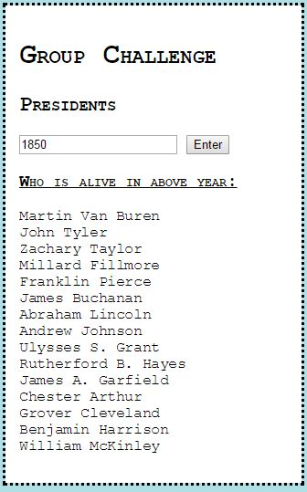

Presidents Project
For the Presidents project, we created a script which would display which current/former/future presidents were alive in any given date, by turning a long list of presidents and their individual attributes into a 2D array and scanning through them using a number of for/if/else statements to check if the date entered is between the birth and death dates (if they have a death date).
 Example Presidents outputLive Demo:
Who is alive in above year:
No year entered